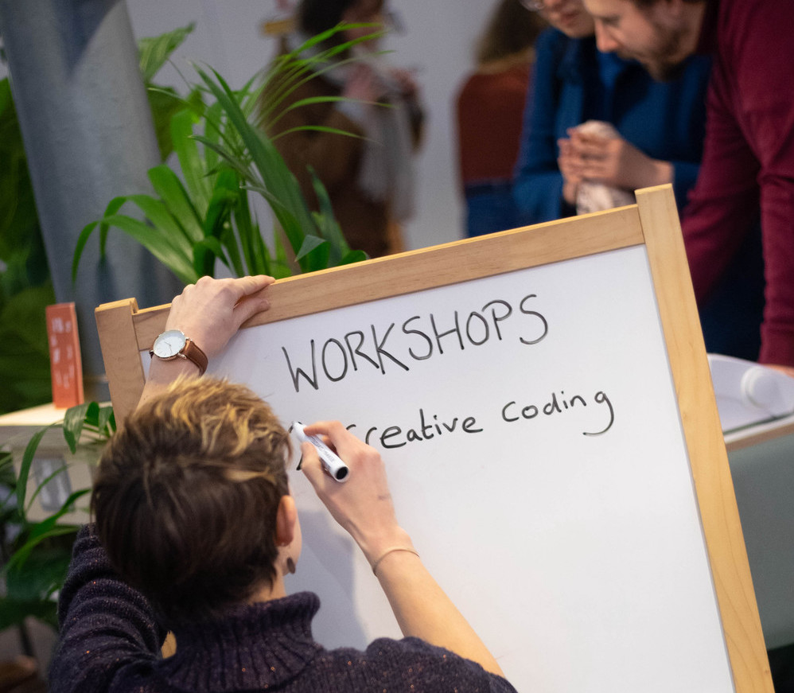

< back to community
Processing Commmunity Day
Find out about the global Processing Community Day here. We - a group of makers, designers and coders in Bristol - created a Bristol event in 2019 which was the starting point for a larger scale festival called Control Shift Festival in 2020.
